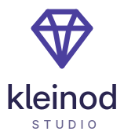

Gestaltung
Ein Kleinod ist ein kleines, wertvolles Stück. Das Zeichen ist ein Edelstein, gezeichnet als Linie: die „Fassung“. Jede App bekommt ihr eigenes Motiv; der Stein ist die gemeinsame Signatur.
Logo
Quer, für Kopfzeilen und Webseite
Quer, dunkler Hintergrund

Gestapelt, für quadratische Flächen
Zeichen allein, ab 16 px (Favicon, Avatar)
- Schutzraum rund um das Logo: mindestens die halbe Höhe des Zeichens.
- Der Schriftzug ist immer kleingeschrieben:
kleinod.studio. „.studio“ steht leiser. - Auf dunklem Grund die
-dark-Varianten verwenden, nie das Logo einfärben oder verzerren.
Farben
#4B3F9E · dunkel #A99CF5#2A2550 · dunkel #F1EFFA#6A6590 · dunkel #B9B4D8#ECEAF7 (Flächen)Violett ist die Signatur und bleibt sparsam: Zeichen, Siegel, einzelne Akzente. In den Apps selbst gilt die Akzentfarbe von GNOME – die Marke steckt im Icon, nicht in der Oberfläche.
Schrift
Adwaita Sans (SIL Open Font License), die Schrift von GNOME: „Medium“ für den Namen, „Regular“ für „.studio“, Versalien mit weitem Abstand für „STUDIO“. Auf der Webseite dieselbe Schrift, ersatzweise Inter.
App-Icons
Typecase · 128 px
auf dunklem Grund
Symbolisch · 16 px, einfarbig
Jedes Icon folgt den GNOME-Richtlinien für App-Icons und dieser Familienregel:
- Eigenes Motiv: ein Gegenstand, der zur App passt (Typecase: Blätter mit Text). Kein Buchstabe, keine Kachel.
- GNOME-Stil: Vorderseite plus etwas dunklere Unterkante, weiche Ecken, Lavendel- und Tintentöne für das Motiv.
- Das Siegel: der gefüllte Edelstein unten rechts, immer gleich – Größe 42 px (Faktor 0,75 des 64er-Rasters), Position x 72 / y 78, weißer Rand, die vier Violetttöne aus
build.py. - Symbolische Variante (16 px): Motiv in einer Farbe, Siegel als kleiner Stein unten rechts.
- Das Siegel nicht verschieben, drehen, umfärben oder weglassen.
- Keine Verläufe auf dem Motiv, keine Texte im Icon.
Dateien
Alle Dateien entstehen aus build.py (Python, braucht Pango/Cairo und rsvg-convert): python3 build.py. Der Schriftzug ist in Umrisse umgewandelt; die SVGs sehen überall gleich aus. Vorschaubilder liegen in preview/.